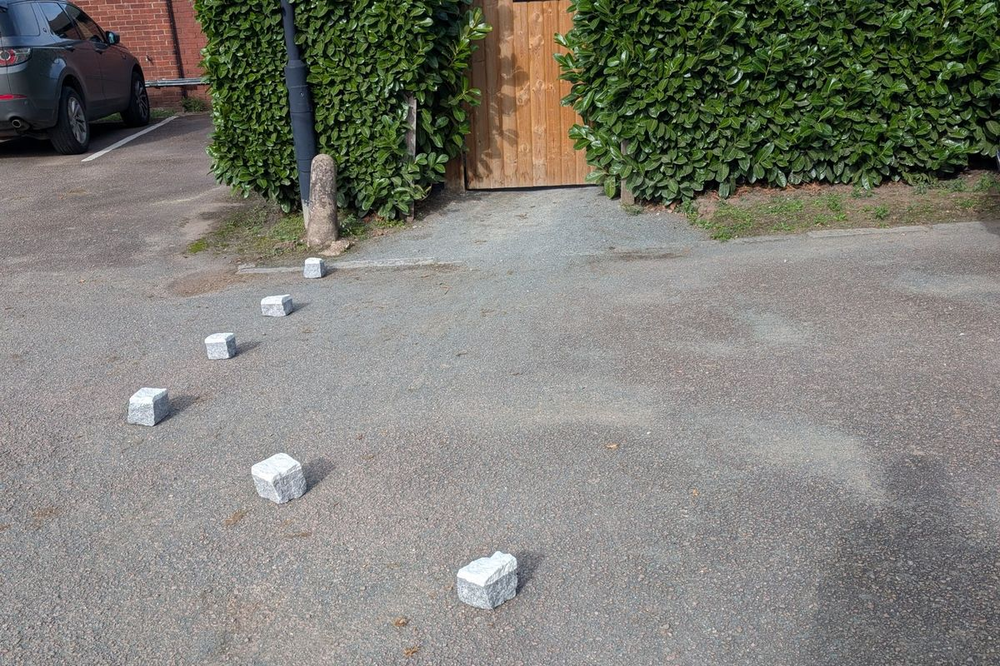
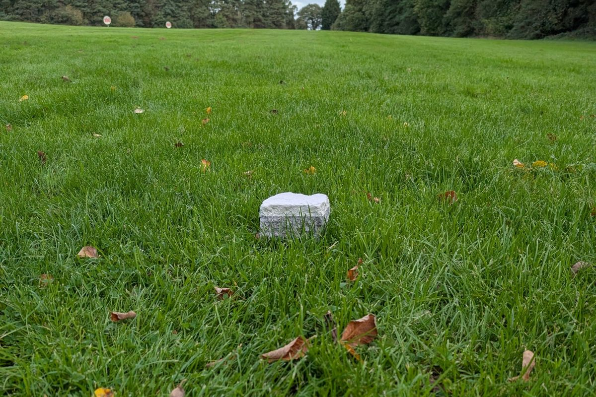
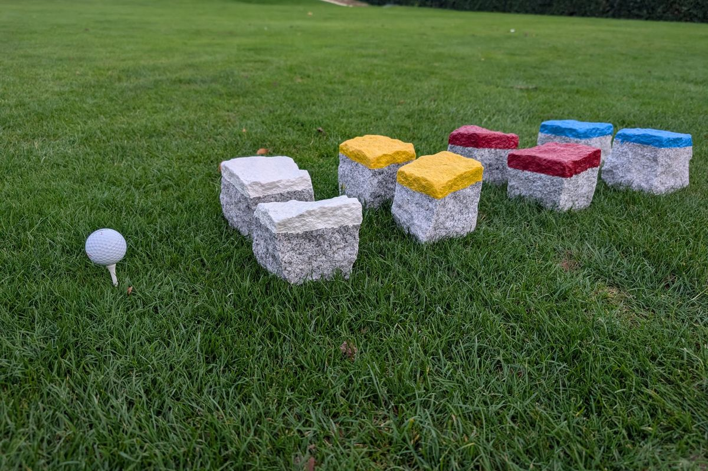

Granite Tee Markers
Our granite tee markers are a ‘must have’ for any quality golf course.
Granite is a totally sustainable material that was created millions of years ago. There is not a more natural product in the golfing world.
Granite is totally durable, and the various colours within the stone produce a ‘sparkle’, giving the product a really unique and stylish vibrance.
- Highest possible quality.
- Totally durable in any conditions.
- Highly sustainable.
- Extreme longevity (unlike wood or metal).
- A real ‘wow’ factor for your members and visitors.
In life there is only one chance to make a first impression.
We feel that when walking on to the first tee, our Granite Tee Markers say a lot about the quality of your golf course. Members are always taken aback at the extreme quality of this product.
Replacing old wood and metal blocks with granite gives members the feeling that the club is constantly improving and investing.
Greenkeepers
For greenkeepers it is very simple to move the blocks to allow mowing of the tee area. The blocks are suitably heavy to ensure they stay in position when placed on the teeing area.
Delineating areas
Granite Tee blocks are great for delineating areas and managing access within the golf course.
Often clubs use short posts to exclude trolleys or guide golfers. Typically within a few days the posts can be seen all leaning in different directions, looking decidedly tatty. Our tee blocks are both attractive and stay where they are put, looking neat and tidy.


Colours
Our markers are available in all colours, but naturally for golf teeing areas the White, Yellow and Red are the normal selections. Blue is often used for Junior forward tees.
The paint used on our tee blocks has been specified by an Industrial Paint Specialist Chemist. The blocks have been tested for extreme durability.
